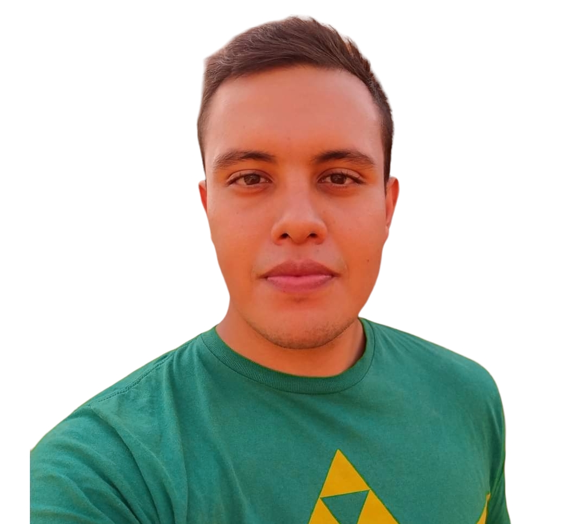

Charlie ́s Adventure es un videojuego de plataforma en 2D lanzado
en el año 2022 por Alumnos de la Universidad Tecnológica de
Morelia. Al principio fue publicado como juego 3D, pero después
salió al público una versión
definitiva en 2D.

Juan CarlosLider de ProyectoJoseph ValenciaDesarrolladorLuis EnriqueDesarrollador